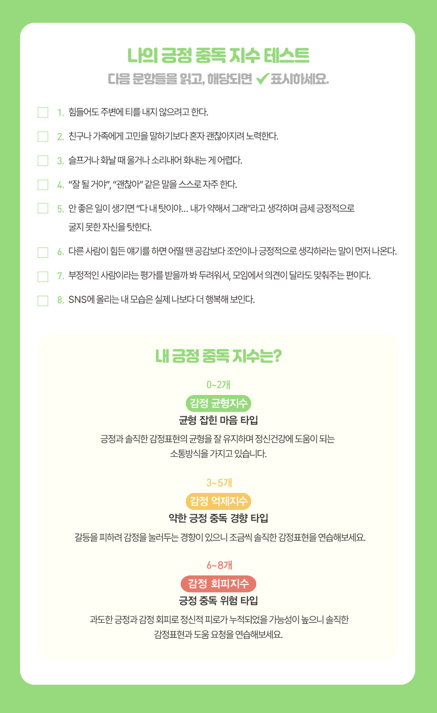

“아니야, 괜찮아.”, “그냥 좀 피곤해서 그래. 걱정하지 마.”, “내일이면 나아질 거야.” 속마음은 힘든데, 겉으로는 이런 말을 반복했던 기억이 있으신가요? 울고 싶을 때도 웃어야 했던 순간, 화가 났지만 이해한다고 말했던 기억. 우리는 언제부터 진짜 감정보다 ‘보기 좋은’ 감정을 선택하게 됐을까요? 마음이 힘들 때 “힘내!”라는 말이 오히려 부담스러웠던 적은 없나요? 친구의 위로가 때론 더 외롭게 느껴진 이유는 무엇일까요? 8개의 간단한 질문을 통해 당신의 감정 표현 패턴을 확인해보세요. 어쩌면 당신도 모르게 ‘항상 밝은 나’를 연기하고 있을지도 모릅니다. 진짜 나를 만나는 시간, 지금 시작해볼까요?
